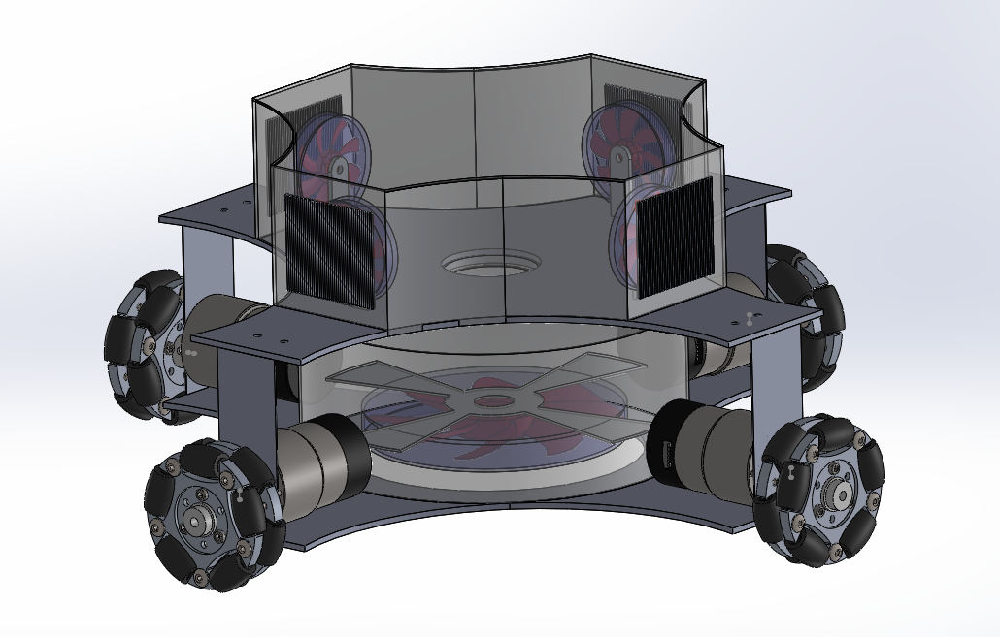
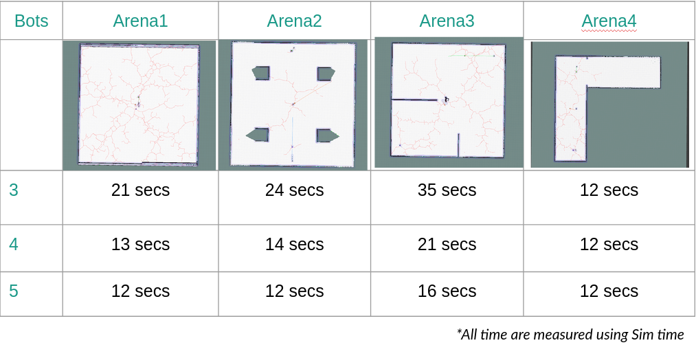
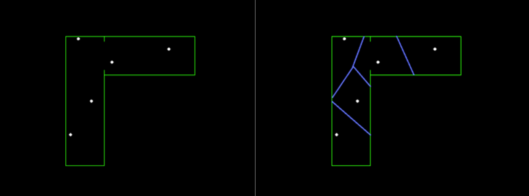
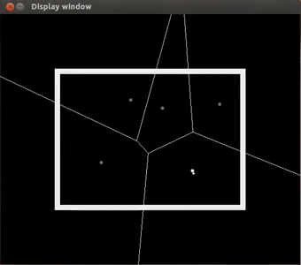
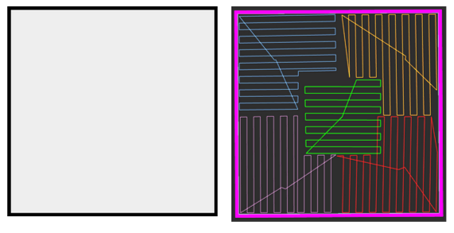
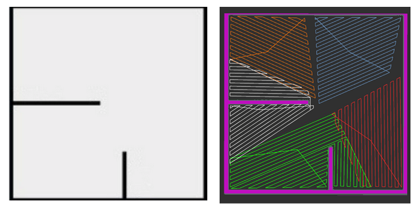
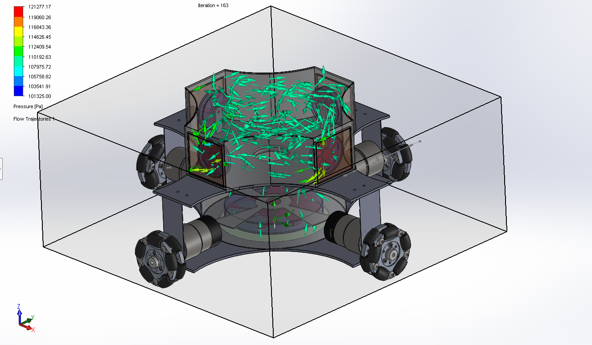
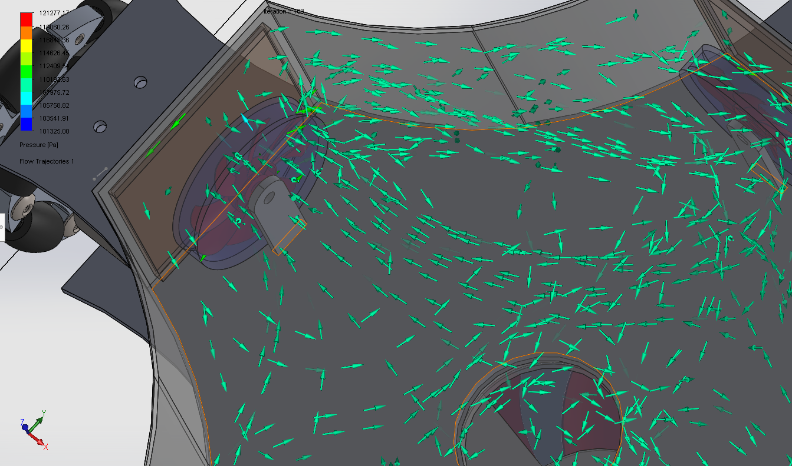

Multi-Agent Coverage and Cleaning
The main objective of this project was to make an efficient multi-agent algorithm for cleaning an unknown terrain,
for which we built “Vox-Bot”, a ROS package for multi robot platform.
This is our solution submitted for AIITRA Robotics Challenge 2021, where we secured second position among all other IITs
and prestigious colleges of India.
Description

CAD design of Vox-Bot
Vox Bot is an 4 wheeled robot with omni wheels for maximum agility and mobility. The main purpose of the robot is to perform vacumm cleaning autonomously in unknown terrain. It houses a Lidar for mapping and a SBC for all computational needs, with one high power brushless motor for vacumm generation and 4 brushed motors for exhausts.
For the Vacumm system, we have done multiple studies for the airflow which can be found in Airflow section.
Below we explain our solution for the problem statement
Pipeline
We have modified the Vanilla navigation stack offered in move base ROS. We have used movebase flex for implementing the below architecture of below navigation stack.
 Complete Pipeline of our solution
Complete Pipeline of our solution
Below are a brief result that is not present in the proposal
Mapping
We have use RRT exploration instead of simple frontier exploration which made it very efficient

Comparision of number of bots and time to explore
Optimal Coverage
We have used voronoi diagram and weighted centroid algorithm for distributing the task between individual robots, more detail about it can be found in the Proposal.

Generating voronoi diagram using Fortners algorithm
We then iterate using weighted center algorithm for calculating the desired voronoi cells and the positions of each agent.
 Weighted center Algorithm
Weighted center Algorithm
Gives a result as such

Robots computing the path and optimal voronoi cell
Boustrophoedn path

Path distribution for arena 1

Path distribution for arena 2
Generating boustrophoden path for the polygon given by the voronoi diagram the robot resides on.
Airflow Study
The vacuum of the bot works on the principle of the lower fan creating pressure difference to suck in air while the exhaust pushes out the air from the above compartment for efficient vacuum generation.
The fan has been placed low for efficient cleaning, with a ground clearance measuring approximately less than half of the wheel radius.
Analysis of the vacuum mechanism was done using the SolidWorks Flow Simulation tool to get outputs about the kind of behavior shown by our vacuum during actual implementation.
The simulation required us to cover our rotating regions with circular bounded bodies to define the rotation boundary. We also defined the inlet and the outlet velocities as 0.6m/s and 0.15m/s below the bot and at the exhausts respectively. As the simulation was an internal one, the image only shows the flow inside our bot but the fact is quite evident through the trajectory of the arrows that in real-world scenarios, vox would certainly be an efficient vacuum design.

Hypothetical system of the Robot for full suction power

Airflow inside the central chamber